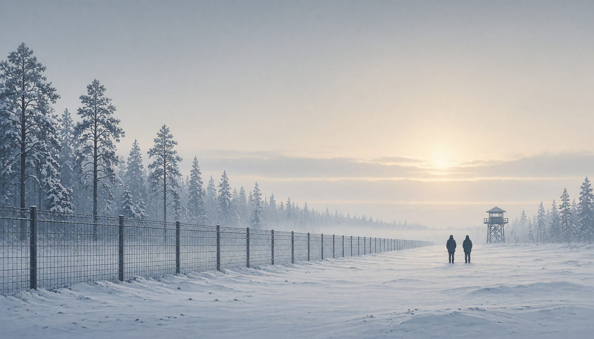

Finland's Parliament to vote on extending border security law to end of 2028
The Constitutional Committee proposes handling the bill under the constitutional enactment procedure, allowing approval by a two-thirds majority. The Social Democratic Party will vote in favour.

Finland's Parliament will vote next week on extending its temporary border security law unchanged to the end of 2028, with one dissenting statement from the Left Alliance and the Greens in the committee report. The Constitutional Committee proposes handling the bill under the constitutional enactment procedure, under which the plenary can approve it by a two-thirds majority after declaring it urgent.
The case for extending the law rests on an unchanged threat picture. The Finnish Border Guard and other security authorities still assess the threat of instrumentalised migration at Finland's eastern border as high. Christoffer Ingo, a Finland Swedish member of Parliament's Constitutional Committee, said no new legislation at national or EU level had changed that assessment. The extension is timed so the law remains in force through next spring's parliamentary elections and the caretaker period that follows, before a new government is formed.
The Constitutional Committee concluded in October that the extension of the Border Security Act could proceed as a limited exception to the Constitution. On that basis, the law allows the government plenary session, in cooperation with the President of the Republic, to restrict receiving applications for international protection on part of Finland's border. The restriction can be decided for up to one month at a time. The law has never been applied. Finland's eastern border has nonetheless been closed since 15 December 2023.
The law dates from July 2024, when Parliament passed it as urgent legislation. Its validity was extended last year to the end of 2026. The SDP, Finland's social democratic party, decided its parliamentary group would vote in favour of the extension and did not grant its MPs exception permissions for the vote.
SDP leader Antti Lindtman said the party conference made a unanimous decision last summer that the border security law should be continued as long as there is no European solution. He said such a solution, awaited for years, is finally moving forward. Party colleague Antti Rinne said he had sought an exception permission to propose a change to the law's period of validity, wanting it valid until the end of next year, and after being refused he will act with the group. The bill returns to the plenary on the basis of the Administration Committee's report.